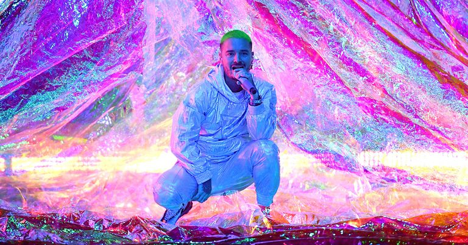

J Balvin knows what you think of when you think of Colombia. It's okay, you can say it: Pablo. Narcos. The coca-leaf empires of the '80s and '90s. The bodies left in their wake. It's an unpleasant past, one that's been re-upped and packaged in Hollywood gloss time and again, a painful reminder of a reputation that the country is still fighting to leave behind. But no one is more determined to help them do that than J Balvin.
"It's such a beautiful place man," Balvin tells me. "We're moving the culture forward."
Right now, he's far from his native Colombia—and the city of Medellín he still calls home—lounging on a white penthouse sofa high above the Palms Casino Resort in Las Vegas. It's Latin Grammy Week, and Balvin will go on to win his third trophy: "Best Urban Album" for 2018's Vibras. But anyone with a swervy set of hips knows he deserved more: His field-leading eight nominations at this year's ceremony only resulted in a single piece of hardware, a missed opportunity by the voters to recognize the impact he's made not only on his own genre, but the industry as a whole.
Even America's finicky, at times baffling Recording Academy has taken notice: Balvin, with Cardi B and Boricua trapper Bad Bunny, is nominated for Record of the Year for "I Like It," the Pete Rodriguez-sampling bop that ruled the summer of 2018. It's Balvin's first nomination for an American Grammy, and more proof of how deeply Latin artists are influencing pop culture all over the globe.
Not that you'd have to look very far for more. Maybe you've bobbed your head to "X," Balvin's chart-topping dancehall earworm with fellow hitmaker Nicky Jam, or DJ Snake's infectious "Taki Taki" with Selena Gomez, Ozuna, and Cardi B. After Vibras dropped in May, Balvin even briefly surpassed Drake (yes, that Drake) to become Spotify's most-streamed artist on the planet, and a few months later, Drake himself hopped on "MIA," a reggaeton dance smash with, perhaps fittingly, Bad Bunny.
But despite ending 2018 as an undeniable global superstar, there's no separation in the way he treats his team, his friends, or the fans that enter his orbit as we make our way through the casino, where he'll greet the crowd that came to show their appreciation for the artist, who happily returns it with selfies, daps, and high-fives. In fact, were it not for Balvin's hair, dyed in a shock of vibrant green, or the Ben Baller-designed, Takashi Murakami-inspired chain hanging from his neck (Price tag: $560,000), one might not be aware that the artist is present at all.
That quiet humility and happiness to be here, for a star with the world in his hands, might just be part of the secret to his success. Now as the face of Buchanan's Whisky and GUESS's Spring 2019 campaign, the verdant-coiffed 33-year-old is using every available lane to make an even bigger impact—and show the world a different side of the country he loves.
"I’m so happy lately, everywhere we go, or when our friends fly overseas, it's 'Where you from? Colombia? Oh, like J Balvin!'" he says with a smile. "Like, they’re starting to forget about that past, 20, 30 years ago. Now we are the new hope of our country."
And that Latin Music Boom you keep hearing about? He's not just part of it—in fact, he helped start it. While Luis Fonsi and Justin Bieber dominated the 2017 airwaves with "Despacito," that same summer, Balvin and Willy William dropped "Mi Gente," the first fully Spanish record to reach #1 on Spotify's global Top 50 chart. So when you see your favorite musicians collaborating with artists like Maluma and Karol G and Anuel Aa—household names in Latin music—it's not our wave they're jumping on; the world is jumping on theirs.
"Es nuestro momento," says Balvin, both echoing the tagline of his Buchanan's campaign and speaking to the way his culture has taken its place in the spotlight worldwide. "We got number ones. We got Hot 100 Billboards. We got Cardi and Bad Bunny—like we achieved that. And we all born Latinos."

Balvin is also keenly aware of what it means to be visible and Latino in the United States right now. While he doesn't go out of his way to speak on politics, he's stood up for his people in the past, even pulling out of a performance at the Trump-owned Miss USA pageant in 2015—it would have been Balvin's first national television opportunity—in response to the then-candidate's disparaging words about immigrants from Mexico and Latin America.
"His comments weren’t just about Mexicans, but about all Latins in general," Balvin told Billboard at the time, adding: "I’m no savior and I’m no Robin Hood, but in this case, I feel totally comfortable and responsible with my decision."
Today, he wants to use his voice to uplift and inspire. Even in the current climate, he finds reason to be optimistic.
"I think in a crisis, it’s always when the best human beings rise up," says Balvin. "I feel proud to be Latino; I just wanna keep raising the bar and take the culture to another level."
And that's why he's focusing on the positive, and bringing those good vibras—and a new narrative—home to his people in Colombia.
"I feel blessed. It’s been an amazing journey, and I think this is just the beginning. This is the first steps.”